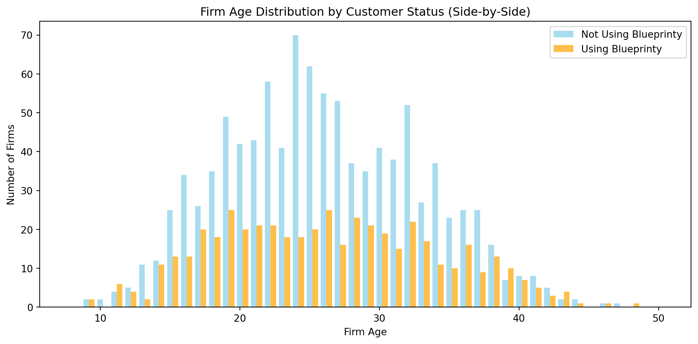
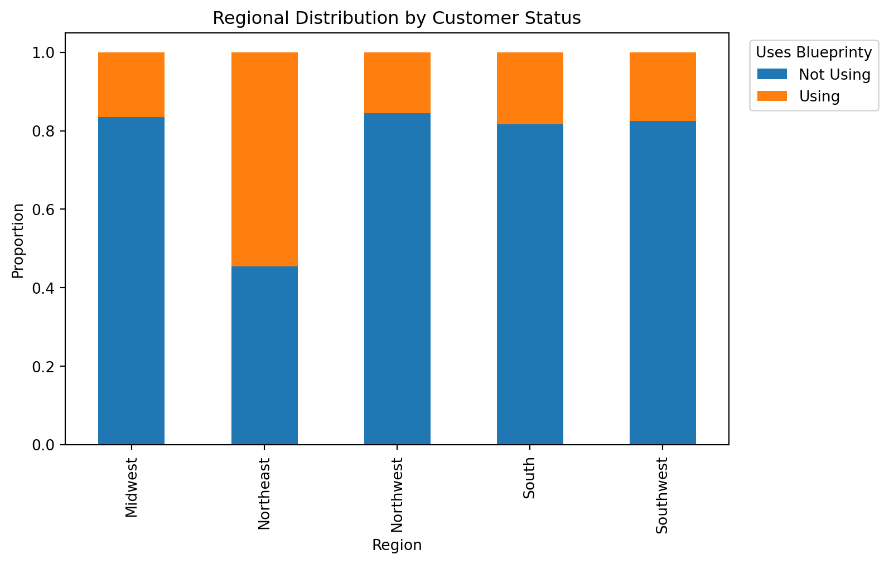

Blueprinty is a small firm that makes software for developing blueprints specifically for submitting patent applications to the US patent office. Their marketing team would like to make the claim that patent applicants using Blueprinty’s software are more successful in getting their patent applications approved. Ideal data to study such an effect might include the success rate of patent applications before using Blueprinty’s software and after using it. Unfortunately, such data is not available.
However, Blueprinty has collected data on 1,500 mature (non-startup) engineering firms. The data include each firm’s number of patents awarded over the last 5 years, regional location, age since incorporation, and whether or not the firm uses Blueprinty’s software. The marketing team would like to use this data to make the claim that firms using Blueprinty’s software are more successful in getting their patent applications approved.
Data
import pandas as pdimport matplotlib.pyplot as pltdf = pd.read_csv("blueprinty.csv")df.head()df.info()df.describe(include="all")df.isnull().sum()plt.figure(figsize=(8, 4))plt.hist(df['patents'], bins=30)plt.title('Distribution of Patents Awarded')plt.xlabel('Number of Patents')plt.ylabel('Number of Firms')plt.show()
import seaborn as snssns.histplot(data=df, x='patents', hue='iscustomer', bins=30, multiple='dodge')plt.title('Number of Patents by Customer Status')plt.xlabel('Number of Patents')plt.ylabel('Number of Firms')plt.legend(title='Uses Blueprinty', labels=['No', 'Yes'])plt.show()df.groupby('iscustomer')['patents'].mean()
From the histograms, we observe that firms using Blueprinty’s software tend to have a distribution shifted slightly to the right compared to those not using the software, suggesting higher patent counts.
The mean number of patents is higher among customers of Blueprinty than non-customers, which may suggest an association between using the software and patenting success. However, further modeling is required to control for other factors like firm age and region.
Blueprinty customers are not selected at random. It may be important to account for systematic differences in the age and regional location of customers vs non-customers.
import numpy as npplt.figure(figsize=(10, 5))bins = np.arange(8, 51, 1) plt.hist(df[df['iscustomer'] ==0]['age'], bins=bins -0.2, width=0.4, alpha=0.7, label='Not Using Blueprinty', color='skyblue')plt.hist(df[df['iscustomer'] ==1]['age'], bins=bins +0.2, width=0.4, alpha=0.7, label='Using Blueprinty', color='orange')plt.title('Firm Age Distribution by Customer Status (Side-by-Side)')plt.xlabel('Firm Age')plt.ylabel('Number of Firms')plt.legend()plt.tight_layout()plt.show()region_counts = pd.crosstab(df['region'], df['iscustomer'], normalize='index')region_counts.columns = ['Not Using', 'Using']region_counts.plot(kind='bar', stacked=True, figsize=(8, 5))plt.title('Regional Distribution by Customer Status')plt.xlabel('Region')plt.ylabel('Proportion')plt.legend(title='Uses Blueprinty', loc='upper left', bbox_to_anchor=(1.02, 1))plt.show()


Firms using Blueprinty software tend to be older, on average, than those not using it. Age might be a confounder and should be controlled for in any causal inference or regression analysis.
There are regional differences in Blueprinty software adoption, with the Northeast having a much higher proportion of customers. Region could be a significant predictor or confounder and should be included in modeling.
Estimation of Simple Poisson Model
Since our outcome variable of interest can only be small integer values per a set unit of time, we can use a Poisson density to model the number of patents awarded to each engineering firm over the last 5 years. We start by estimating a simple Poisson model via Maximum Likelihood.
The likelihood function for the Poisson model is based on the assumption that the outcome variable \(Y_i \sim \text{Poisson}(\lambda_i)\), where \(\lambda_i = \exp(X_i \beta)\).
The probability mass function for a Poisson-distributed outcome is:
This result makes intuitive sense because the mean of a Poisson distribution is \(\lambda\), so the sample mean is the natural estimate of the population mean under the MLE framework.
lambda_mle = df['patents'].mean()print(f"Lambda MLE (sample mean of Y): {lambda_mle:.4f}")
Next, we extend our simple Poisson model to a Poisson Regression Model such that \(Y_i = \text{Poisson}(\lambda_i)\) where \(\lambda_i = \exp(X_i'\beta)\). The interpretation is that the success rate of patent awards is not constant across all firms (\(\lambda\)) but rather is a function of firm characteristics \(X_i\). Specifically, we will use the covariates age, age squared, region, and whether the firm is a customer of Blueprinty.
Poisson Regression Log-Likelihood
import numpy as npfrom scipy.special import gammalndef neg_poisson_loglikelihood(beta, X, y): beta = np.asarray(beta) X = np.asarray(X) y = np.asarray(y) linear_pred = X @ beta lmbda = np.exp(linear_pred) log_lik =-lmbda + y * linear_pred - gammaln(y +1)return-np.sum(log_lik)
Optimization terminated successfully.
Current function value: 3269.138673
Iterations: 376
Function evaluations: 588
Estimated beta coefficients:
[ 0.11541318 -0.00237274 0.10391813 0.02789235 -0.07511018 -0.01228066
-0.05693624]
The Poisson regression model estimated the impact of firm characteristics on patent counts. We find that firm age is positively associated with patent output, while being a Blueprinty customer is also linked to a higher expected number of patents. Regional effects are small and mixed, with most being slightly negative relative to the omitted baseline region.
/var/folders/32/xz9pd3zx1yv2tk_19psx52z40000gn/T/ipykernel_27250/820769554.py:11: RuntimeWarning: overflow encountered in exp
lmbda = np.exp(linear_pred)
Variable
Beta
Std. Error
0
intercept
-0.329507
6.520750e-02
1
age
0.137006
2.057879e-03
2
age_squared
-0.002764
1.473287e-09
3
iscustomer
0.214490
3.075139e-02
4
Northeast
-0.013539
4.321331e-02
5
Northwest
-0.053201
5.356145e-02
6
South
0.022149
5.239738e-02
7
Southwest
0.042996
4.660574e-02
The inclusion of a constant term (intercept = -0.3295) ensures the model accounts for a baseline patent rate when all covariates are zero.
import statsmodels.api as smimport pandas as pdX_check = df[['age']].copy()X_check['age_squared'] = X_check['age']**2X_check['iscustomer'] = df['iscustomer']X_check = pd.concat([X_check, pd.get_dummies(df['region'], drop_first=True)], axis=1)X_check = sm.add_constant(X_check) X_check = X_check.astype(float)glm_poisson = sm.GLM(df['patents'], X_check, family=sm.families.Poisson())glm_results = glm_poisson.fit()import pandas as pdimport numpy as np# Extract valuessummary_df = pd.DataFrame({"Variable": glm_results.params.index,"Coefficient": glm_results.params.values,"Std. Error": glm_results.bse,"z-value": glm_results.tvalues,"P-value": glm_results.pvalues,"95% CI Lower": glm_results.conf_int()[0],"95% CI Upper": glm_results.conf_int()[1]})# Round for readabilitysummary_df = summary_df.round(4)# Displaysummary_df
Variable
Coefficient
Std. Error
z-value
P-value
95% CI Lower
95% CI Upper
const
const
-0.5089
0.1832
-2.7783
0.0055
-0.8679
-0.1499
age
age
0.1486
0.0139
10.7162
0.0000
0.1214
0.1758
age_squared
age_squared
-0.0030
0.0003
-11.5132
0.0000
-0.0035
-0.0025
iscustomer
iscustomer
0.2076
0.0309
6.7192
0.0000
0.1470
0.2681
Northeast
Northeast
0.0292
0.0436
0.6686
0.5037
-0.0563
0.1147
Northwest
Northwest
-0.0176
0.0538
-0.3268
0.7438
-0.1230
0.0878
South
South
0.0566
0.0527
1.0740
0.2828
-0.0467
0.1598
Southwest
Southwest
0.0506
0.0472
1.0716
0.2839
-0.0419
0.1431
The results are mostly consistent, with some small differences in coefficient values (possibly due to different scaling, convergence settings, or data preprocessing).
Interpretation of Regression Results
This analysis uses a Poisson regression model to examine the factors influencing the number of patents. The model is specified as a Generalized Linear Model (GLM) with a log link and Poisson distribution.
Fitting Method: IRLS (Iteratively Reweighted Least Squares)
Key Coefficient Interpretations
Below is the interpretation of key coefficients:
Intercept (const = -0.5089)
When all predictors are set to zero, the expected log count of patents is -0.5089. Converting from log to count scale: exp(-0.5089) ≈ 0.60 → the baseline expected number of patents is approximately 0.60.
Age (coef = 0.1486, p < 0.001)
Each additional year of age increases the log of the expected patent count by 0.1486. On the count scale: exp(0.1486) ≈ 1.16, meaning a 16% increase in the expected number of patents per additional year of age.
Age Squared (coef = -0.0030, p < 0.001)
The negative coefficient indicates a concave (inverted-U) relationship between age and patents: the number of patents increases with age up to a certain point, then starts to decline.
Is Customer (coef = 0.2076, p < 0.001)
Being a customer increases the expected number of patents. exp(0.2076) ≈ 1.23 → customers are expected to have 23% more patents than non-customers.
Region Variables (Northeast, Northwest, South, Southwest)
None of these regional indicators are statistically significant (p-values > 0.05), suggesting no strong evidence that geographic region affects patent counts in this model.
In summary, Age has a significant nonlinear effect on patent count. Customer status is a strong and significant positive predictor. Regional location appears not to significantly affect patent outcomes. The model captures meaningful patterns, though its overall explanatory power is moderate (Pseudo R² = 0.136)
Estimating the Effect of Blueprinty’s Software on Patent Output
To understand the effect of using Blueprinty’s software (represented by the iscustomer variable) on patent success, we estimate the average treatment effect (ATE). Since we are using a Poisson regression with a log link, the beta coefficient for iscustomer is not directly interpretable in units of patent count.
Instead, we use a counterfactual prediction approach:
Create two copies of the dataset:
X_0: with iscustomer = 0 for all firms (non-customers)
X_1: with iscustomer = 1 for all firms (customers)
Use the fitted model to generate predicted patent counts for each dataset:
y_pred_0 = model.predict(X_0)
y_pred_1 = model.predict(X_1)
Compute the individual treatment effects (y_pred_1 - y_pred_0), and take their average.
import statsmodels.api as smimport numpy as npimport pandas as pd# Assuming X and y are your dataX_df = pd.DataFrame(X, columns=['intercept', 'age', 'age_squared', 'iscustomer','Northeast', 'Northwest', 'South', 'Southwest'])# Fit the model if it's not already donemodel = sm.GLM(y, X_df, family=sm.families.Poisson(link=sm.families.links.log())).fit()# Now create counterfactualsX_0 = X_df.copy()X_0['iscustomer'] =0X_1 = X_df.copy()X_1['iscustomer'] =1# Predicty_pred_0 = model.predict(X_0)y_pred_1 = model.predict(X_1)# Treatment effecttreatment_effect = y_pred_1 - y_pred_0average_effect = treatment_effect.mean()average_effect
/Users/wenxinxu/Library/Python/3.9/lib/python/site-packages/statsmodels/genmod/families/links.py:13: FutureWarning: The log link alias is deprecated. Use Log instead. The log link alias will be removed after the 0.15.0 release.
warnings.warn(
np.float64(0.7927680710452972)
Result
On average, being a Blueprinty customer is associated with an increase of approximately 0.79 patents.
This suggests that Blueprinty’s software has a substantial and positive effect on firms’ innovation output, as measured by patent generation.
AirBnB Case Study
Introduction
AirBnB is a popular platform for booking short-term rentals. In March 2017, students Annika Awad, Evan Lebo, and Anna Linden scraped of 40,000 Airbnb listings from New York City. The data include the following variables:
Variable Definitions
- `id` = unique ID number for each unit
- `last_scraped` = date when information scraped
- `host_since` = date when host first listed the unit on Airbnb
- `days` = `last_scraped` - `host_since` = number of days the unit has been listed
- `room_type` = Entire home/apt., Private room, or Shared room
- `bathrooms` = number of bathrooms
- `bedrooms` = number of bedrooms
- `price` = price per night (dollars)
- `number_of_reviews` = number of reviews for the unit on Airbnb
- `review_scores_cleanliness` = a cleanliness score from reviews (1-10)
- `review_scores_location` = a "quality of location" score from reviews (1-10)
- `review_scores_value` = a "quality of value" score from reviews (1-10)
- `instant_bookable` = "t" if instantly bookable, "f" if not
We treat the number of reviews as a proxy for booking volume, based on the assumption that more bookings lead to more reviews. ### Data Overview
import pandas as pd# Load datasetdf = pd.read_csv("airbnb.csv")df.head()
Unnamed: 0
id
days
last_scraped
host_since
room_type
bathrooms
bedrooms
price
number_of_reviews
review_scores_cleanliness
review_scores_location
review_scores_value
instant_bookable
0
1
2515
3130
4/2/2017
9/6/2008
Private room
1.0
1.0
59
150
9.0
9.0
9.0
f
1
2
2595
3127
4/2/2017
9/9/2008
Entire home/apt
1.0
0.0
230
20
9.0
10.0
9.0
f
2
3
3647
3050
4/2/2017
11/25/2008
Private room
1.0
1.0
150
0
NaN
NaN
NaN
f
3
4
3831
3038
4/2/2017
12/7/2008
Entire home/apt
1.0
1.0
89
116
9.0
9.0
9.0
f
4
5
4611
3012
4/2/2017
1/2/2009
Private room
NaN
1.0
39
93
9.0
8.0
9.0
t
# Summary statistics and missing value inspectiondf.describe()df.isna().mean().sort_values(ascending=False)
import statsmodels.api as smimport statsmodels.formula.api as smf# Poisson regression modelmodel = smf.glm( formula="number_of_reviews ~ price + C(room_type) + review_scores_cleanliness + review_scores_location + review_scores_value + C(instant_bookable)", data=df_clean, family=sm.families.Poisson()).fit()import pandas as pd# Create formatted summary tablesummary_df = pd.DataFrame({"Variable": model.params.index,"Coefficient": model.params.round(4),"Std. Error": model.bse.round(4),"z-value": model.tvalues.round(2),"P-value": model.pvalues.round(3),"95% CI Lower": model.conf_int()[0].round(4),"95% CI Upper": model.conf_int()[1].round(4)})summary_df.reset_index(drop=True, inplace=True)summary_df
Variable
Coefficient
Std. Error
z-value
P-value
95% CI Lower
95% CI Upper
0
Intercept
3.5679
0.0153
233.37
0.000
3.5379
3.5978
1
C(room_type)[T.Private room]
-0.0252
0.0027
-9.41
0.000
-0.0305
-0.0200
2
C(room_type)[T.Shared room]
-0.2648
0.0086
-30.93
0.000
-0.2816
-0.2480
3
C(instant_bookable)[T.t]
0.3324
0.0029
115.54
0.000
0.3268
0.3381
4
price
-0.0000
0.0000
-0.98
0.327
-0.0000
0.0000
5
review_scores_cleanliness
0.1130
0.0015
76.15
0.000
0.1101
0.1159
6
review_scores_location
-0.0821
0.0016
-51.80
0.000
-0.0852
-0.0790
7
review_scores_value
-0.0900
0.0018
-50.35
0.000
-0.0935
-0.0865
Interpretation of Poisson Regression Results
We fit a Poisson regression model to examine how listing characteristics influence the number of Airbnb reviews, treating number_of_reviews as a proxy for booking activity. Below is the interpretation of the model coefficients:
Key Findings
Room Type
Private room: Coefficient = -0.0252, p < 0.001
→ Listings that are private rooms receive approximately 2.5% fewer reviews than entire apartments, holding other factors constant.
→ exp(-0.0252) ≈ 0.975
Shared room: Coefficient = -0.2648, p < 0.001
→ Shared rooms receive approximately 23.3% fewer reviews than entire apartments.
→ exp(-0.2648) ≈ 0.767
Instant Bookable
Coefficient = 0.3324, p < 0.001
→ Listings that are instantly bookable receive about 39.4% more reviews than those requiring host approval.
→ exp(0.3324) ≈ 1.394
Price
Coefficient = -7.42e-06, p = 0.327 (not significant)
→ Price does not significantly influence the number of reviews in this model.
Review Scores
Cleanliness: Coefficient = 0.1130, p < 0.001
→ A one-point increase in cleanliness rating is associated with a ~12% increase in reviews.
→ exp(0.1130) ≈ 1.12
Location: Coefficient = -0.0821, p < 0.001
→ Surprisingly, higher location ratings are associated with ~7.9% fewer reviews.
→ This may reflect an inverse relationship between satisfaction and motivation to leave a review.
Value: Coefficient = -0.0900, p < 0.001
→ Higher value scores also correspond to ~8.6% fewer reviews.
→ exp(-0.0900) ≈ 0.914
Model Fit
Pseudo R² = 0.538
→ The model explains approximately 53.8% of the variance in the (log) number of reviews, suggesting good overall fit.
Conclusion
The analysis reveals that room type, booking convenience, and review scores play a significant role in predicting review volume. Notably, cleanliness and instant bookability are strong positive drivers, while price has no significant impact.
Negative Binomial Regression
To account for potential overdispersion in the count data (number_of_reviews), we fit a Negative Binomial regression model. This is more flexible than Poisson regression when the variance exceeds the mean.
import statsmodels.api as smimport statsmodels.formula.api as smf# Fit the model (formula same as in Poisson)nb_model = smf.glm( formula="number_of_reviews ~ price + C(room_type) + C(instant_bookable) + review_scores_cleanliness + review_scores_location + review_scores_value", data=df_clean, family=sm.families.NegativeBinomial()).fit()import pandas as pdimport numpy as np# Create formatted summary table with exp(coef)nb_summary = pd.DataFrame({"Variable": nb_model.params.index,"Coefficient": nb_model.params.round(4),"Exp(Coef)": np.exp(nb_model.params).round(3),"Std. Error": nb_model.bse.round(4),"z-value": nb_model.tvalues.round(2),"P-value": nb_model.pvalues.round(3),"95% CI Lower": nb_model.conf_int()[0].round(4),"95% CI Upper": nb_model.conf_int()[1].round(4)})nb_summary.reset_index(drop=True, inplace=True)nb_summary
/Users/wenxinxu/Library/Python/3.9/lib/python/site-packages/statsmodels/genmod/families/family.py:1367: ValueWarning: Negative binomial dispersion parameter alpha not set. Using default value alpha=1.0.
warnings.warn("Negative binomial dispersion parameter alpha not "
Variable
Coefficient
Exp(Coef)
Std. Error
z-value
P-value
95% CI Lower
95% CI Upper
0
Intercept
4.2213
68.123
0.0765
55.17
0.000
4.0713
4.3713
1
C(room_type)[T.Private room]
-0.0054
0.995
0.0126
-0.43
0.668
-0.0301
0.0193
2
C(room_type)[T.Shared room]
-0.2298
0.795
0.0367
-6.27
0.000
-0.3016
-0.1579
3
C(instant_bookable)[T.t]
0.3231
1.381
0.0148
21.78
0.000
0.2941
0.3522
4
price
0.0000
1.000
0.0000
0.52
0.604
-0.0000
0.0001
5
review_scores_cleanliness
0.1959
1.216
0.0068
28.92
0.000
0.1826
0.2092
6
review_scores_location
-0.1167
0.890
0.0079
-14.84
0.000
-0.1321
-0.1013
7
review_scores_value
-0.2088
0.812
0.0088
-23.72
0.000
-0.2260
-0.1915
Interpretation of Negative Binomial Regression Results
To account for potential overdispersion in the count of reviews, we fitted a Negative Binomial regression model. The dependent variable is number_of_reviews, used as a proxy for booking frequency.
Key Findings
Room Type
Private room: Coefficient = -0.0054, p = 0.668
→ Not statistically significant. Private rooms receive a similar number of reviews as entire apartments.
Coefficient = 0.3231, p < 0.001
→ Instantly bookable listings receive ~38.1% more reviews.
→ exp(0.3231) ≈ 1.381
Price
Coefficient = 1.71e-05, p = 0.604
→ Not statistically significant. Price does not appear to affect the number of reviews.
Review Scores
Cleanliness: Coefficient = 0.1959, p < 0.001
→ A one-point increase in cleanliness rating is associated with a ~21.6% increase in expected reviews.
→ exp(0.1959) ≈ 1.216
Location: Coefficient = -0.1167, p < 0.001
→ Higher location scores are unexpectedly associated with ~11% fewer reviews.
→ exp(-0.1167) ≈ 0.89
Value: Coefficient = -0.2088, p < 0.001
→ Higher value scores are associated with ~18.8% fewer reviews.
→ exp(-0.2088) ≈ 0.812
Model Performance
Pseudo R² (CS) = 0.0429
→ The model explains about 4.3% of the variation in review count — a lower fit compared to Poisson, but potentially more appropriate due to overdispersion.
Conclusion
This model confirms that: - Cleanliness and instant bookability are strong positive drivers of review (and likely booking) volume. - The effect of room type is significant only for shared rooms. - Price does not influence review count. - Higher review scores for value and location are surprisingly associated with fewer reviews, possibly reflecting inverse satisfaction-review behavior or confounding factors.
To determine which model better fits the review count data, we compared the Poisson and Negative Binomial regression models using AIC and checked for overdispersion.
Key Metrics:
Mean number of reviews: 21.25
Variance of reviews: 1031.73
Poisson AIC: 1,070,158.69
Negative Binomial AIC: 246,285.76
Overdispersion detected?: True
Interpretation:
The variance far exceeds the mean (1031 vs. 21), indicating strong overdispersion. This violates the Poisson model’s key assumption that variance equals the mean.
Although the Poisson model reported a high pseudo R², its extremely high AIC shows that it is likely overfitting and inappropriate for the data.
The Negative Binomial model has a much lower AIC, confirming it better fits the overdispersed data—even though its pseudo R² is lower, it’s more statistically sound and trustworthy.
Summary:
Given the presence of overdispersion and a significantly lower AIC, the Negative Binomial model is the preferred choice for modeling the number of Airbnb reviews in this dataset.